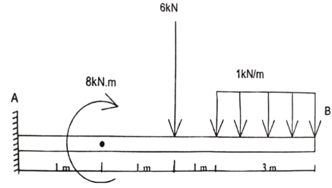
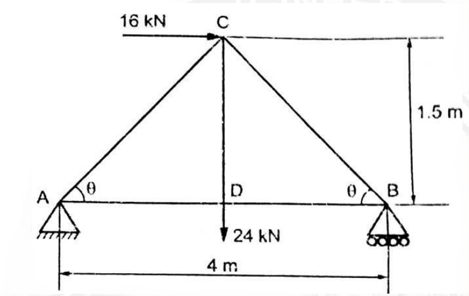

B.Tech. I & II Semester
Examination, December 2025
Grading System (GS)
Max Marks: 70 | Time: 3 Hours
Note:
i) Attempt any five questions.
ii) All questions carry equal marks.
iii) In case of any doubt or dispute the English version question should be treated as final.
a) Explain various methods of compaction of concrete and their importance. (Unit 1)
b) Describe different types of staircases with neat sketch and explain their suitability for different buildings. (Unit 1)
a) Explain the different methods of measuring elevations, including spirit leveling, trigonometric leveling and barometric leveling. (Unit 2)
b) What are electronic surveying instruments? Explain their need and advantages over conventional instruments. (Unit 2)
a) Describe the steps involved in preparing a profile and cross-section for a proposed road project. (Unit 3)
b) Define contour. Explain the characteristics of contour lines and their significance in engineering projects. (Unit 3)
a) Explain the procedure to find forces in members of truss by using method of sections. (Unit 4)
b) Two forces, one of which is double the other has resultant of 260 N. If the direction of the larger force is reversed and the other remains unaltered, the resultant reduces to 180 N. Determine the magnitude of the force and the angle between the forces. (Unit 4)
a) Determine the centre of gravity of solid cone of base Radius 'R' and height 'h'. (Unit 5)
b) Define centroid and centre of gravity. Explain the difference between them with suitable examples. (Unit 5)
a) Explain various laboratory tests on concrete and mortar with neat sketches. (Unit 1)
b) Calculate the reactions in cantilever beam shown below. (Unit 5)

a) Determine the forces in the truss shown in Fig. It carries a horizontal load of 16 kN and vertical load of 24 kN. (Unit 4)

b) Define remote sensing. Describe the components of a remote sensing system with neat sketches. (Unit 3)
a) Explain the conventional methods of distance measurement using chains and tapes. (Unit 2)
b) Describe the manufacturing process of bricks. Explain the properties of good building bricks and laboratory tests conducted on bricks. (Unit 1)